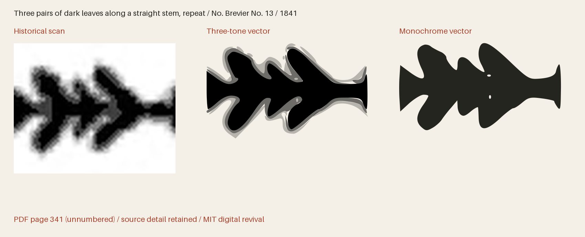

Three pairs of dark leaves along a straight stem, repeat
Specimen PDF page 341 (unnumbered leaf).


Use this icon in HTML
Download every part: Web bundle ZIP 1 of 2 Web bundle ZIP 2 of 2. Extract all parts into the same folder, then place the collection folder beside your HTML file. Together the parts include all SVGs, PNGs, fonts, CSS, instructions and license notices. Keep the subfolders together for these examples.
Three-tone image
This displays all three tones with a transparent background. Set the height; the width follows the original proportions.
<img src="collection/caslon-ornaments-1841/svg/multitone/caslon-1841-p340-brevier-13-repeat.svg"
alt="Three pairs of dark leaves along a straight stem, repeat" height="96">An image has its own colour context, so page CSS cannot recolour its internal regions. For a decorative image beside a text label, use alt="".
Three-tone with your own colours
On an HTTP(S) page, load the sprite from the same site. This complete example uses dark primary ink and two strengths of red. Each region has an independent colour and opacity; set the secondary and tertiary values alike for a two-tone appearance.
<style>
.revival-cut {
display: inline-block;
font-size: 96px;
height: 1em;
width: 0.941406em;
vertical-align: middle;
--fr-primary-color: #24251f;
--fr-secondary-color: #a5422c;
--fr-tertiary-color: #a5422c;
--fr-primary-opacity: 1;
--fr-secondary-opacity: 0.55;
--fr-tertiary-opacity: 0.25;
}
</style>
<svg class="revival-cut" role="img" aria-label="Three pairs of dark leaves along a straight stem, repeat">
<use href="collection/caslon-ornaments-1841/web/icons-multitone-6.svg#caslon-1841-p340-brevier-13-repeat"></use>
</svg>Monochrome icon font
Copy the whole web/ folder, including CSS and webfonts. Font size and colour use ordinary CSS. The icon font draws the solid version; use SVG for three-tone artwork.
<link rel="stylesheet" href="collection/caslon-ornaments-1841/web/icons.css">
<span class="fr-icon fr-caslon-1841-p340-brevier-13-repeat" aria-hidden="true"
style="font-size:96px;color:#a5422c"></span>
<span>Three pairs of dark leaves along a straight stem, repeat</span>The decorative font icon is hidden from screen readers and has a visible text label. An icon conveying meaning on its own needs role="img" and an aria-label instead of aria-hidden.
Compare with the historical impression
